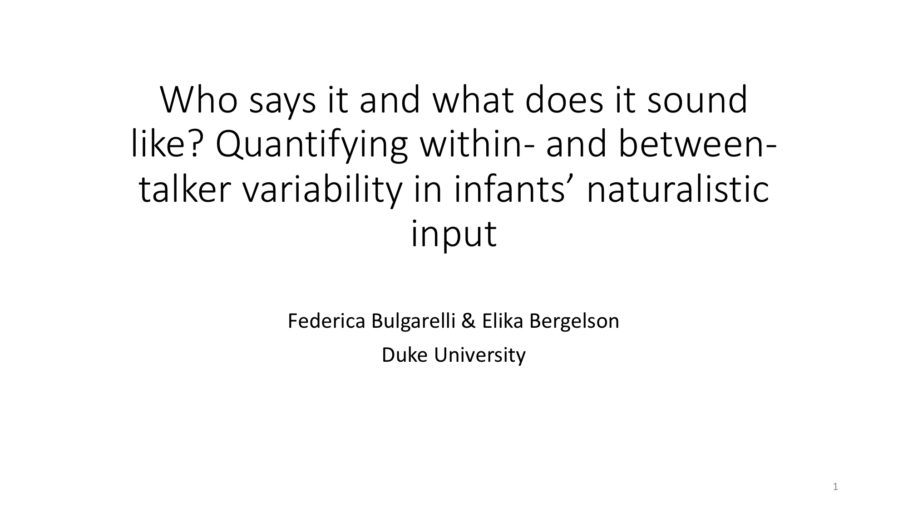

<div class="container" id="main">
 <div class="row">
  <div class="12u">
   <div class="content">
    <!-- Content -->
    <article class="box page-content">
     <header>
      <h2>
       Who says it and what does it sound like?
       <br/>
       Quantifying within- and between- talker variability
       <br/>
       in infants’ naturalistic input
      </h2>
      <h3>
       Bulgarelli &amp; Bergelson (2019)
      </h3>
      <h3>
       Presented at BUCLD 2019 in Boston, MA
      </h3>
     </header>
     <div class="3u 12u(mobile)">
      <section class="box feature">
       <a class="image featured" href="../../files/presentations/bulgarelli_bergelson_bucld2019.pdf">
        
       </a>
      </section>
     </div>
     <h4>
      Abstract
     </h4>
     <p>
      Words sound slightly different each time they are said, both by the same talker and across talkers. Rather than hurting learning, lab studies suggest that between- and withintalker variability helps infants learn minimal-pairs. To set the stage for linking naturally-occurring variability to vocabulary and word production, we quantified acoustic variability in the SEEDLingS corpus by measuring well-established acoustic properties on all tokens of the top concrete nouns (e.g. ball). These measurements reveal that both between- and within- talker variability is readily available in infants’ input, in similar ways to the variability measured in lab stimuli. Further, while between-talker variability is related to the number of talkers in the input, within-talker variability is not related to number of talkers, proportion of the input from the top talker, or tokencount. Next steps will link naturally-occurring variability ‘in the wild’ to vocabulary and word production.
     </p>
    </article>
   </div>
  </div>
 </div>
</div>
